기준: 앱의 Green UI v2.5.1(planner/static/tokens.css + v2/shell.css + 기존 편집기 컴포넌트 v2/editor.css).
값은 Chromium에서 잰 계산 값이며 추정 값은 없습니다. 요소가 한쪽에 없으면 비교 불가입니다.
정렬 전 = editor-next-greenui.css를 막고 잰 값(v1.12 원래 모양), 정렬 후 = 지금. 측정: 정렬 전 2026-11-14 07:53 · 정렬 후 2026-11-14 07:55
컴포넌트 28개 — 정렬 전: 일치 2 · 충돌 22 · 비교 불가 4 → 정렬 후: 일치 20 · 충돌 4 · 비교 불가 4
| 분류 | 항목 | 기존 Green UI | 신규 편집기(정렬 후) | 판정 | 충돌 속성 · 현재 값 → 변경 후 값 | |||||||||||||||||||||||||||||||||||||||
|---|---|---|---|---|---|---|---|---|---|---|---|---|---|---|---|---|---|---|---|---|---|---|---|---|---|---|---|---|---|---|---|---|---|---|---|---|---|---|---|---|---|---|---|---|
| 버튼 | 주요 버튼 기존 .btn.sm.primary신규 .am-ed-button--primary신규: 구좌 유형 대화상자의 [적용] |
요소 없음·화면 밖 | 일치 정렬 전: 충돌 발견 |
| ||||||||||||||||||||||||||||||||||||||||
| 버튼 | 보조 버튼 기존 #xlsDown신규 #exportDemo |
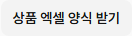 | 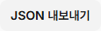 |
일치 정렬 전: 충돌 발견 |
| |||||||||||||||||||||||||||||||||||||||
| 버튼 | 텍스트형(고스트) 버튼 기존 a.btn.sm.ghost신규 #undo기존 편집기의 실행 취소·이동 링크와 같은 역할 |
요소 없음·화면 밖 | 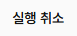 |
일치 정렬 전: 충돌 발견 |
| |||||||||||||||||||||||||||||||||||||||
| 버튼 | 작은 버튼 기존 .btn.xs신규 .am-ed-button--sm기존 .btn.xs는 고스트형만 있음 |
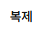 | 일치 정렬 전: 충돌 발견 |
| ||||||||||||||||||||||||||||||||||||||||
| 버튼 | 비활성 텍스트 버튼 기존 #xlsDown신규 #exportDemo양쪽 같은 버튼에 disabled를 걸고 잼 |
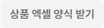 | 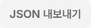 |
일치 정렬 전: 충돌 발견 |
| |||||||||||||||||||||||||||||||||||||||
| 버튼 | 비활성 아이콘 버튼(순서 이동) 기존 #secList .ib:disabled신규 [data-list-action]:disabled맨 위 구좌의 [위로] |
일치 정렬 전: 충돌 발견 |
| |||||||||||||||||||||||||||||||||||||||||
| 버튼 | 키보드 포커스(주요 버튼) 기존 .btn.sm.primary, .v2plan .v2btn.primary신규 .am-ed-button--primary |
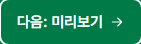 | 일치 정렬 전: 일치 | |||||||||||||||||||||||||||||||||||||||||
| 입력 | 한 줄 입력창 기존 #panel input[type=text]신규 #panel-body .am-ed-input높이 44px는 DS field-height·앱 --control-lg 기준이라 신규를 유지 |
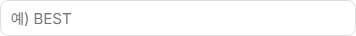 | 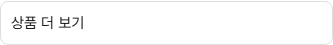 |
충돌 발견 정렬 전: 충돌 발견 |
| |||||||||||||||||||||||||||||||||||||||
| 입력 | 입력창 포커스 기존 #panel input[type=text]신규 #panel-body .am-ed-input |
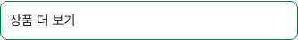 |
일치 정렬 전: 충돌 발견 |
| ||||||||||||||||||||||||||||||||||||||||
| 입력 | 여러 줄 입력창 기존 #panel textarea신규 #panel-body .am-ed-textarea높이는 줄 수에 따라 다름 |
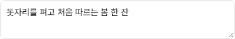 | 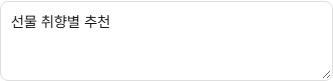 |
충돌 발견 정렬 전: 충돌 발견 |
| |||||||||||||||||||||||||||||||||||||||
| 입력 | 선택창(select) 기존 #panel select신규 .am-ed-select신규 기본 화면에 select 없음(유형은 대화상자로 고름) |
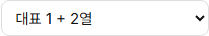 | 요소 없음·화면 밖 | 비교 불가 정렬 전: 비교 불가 | 잰 쪽 값: {"background-color": "rgb(255, 255, 255)", "color": "rgb(20, 20, 20)", "border-top-width": "1px", "border-top-style": "solid", "border-top-color": "rgb(222, 222, 222)", "border-top-left-radius": "8px", "height": "36px", "padding-left": "10px", "font-size": "15px", "font-weight": "400", "line-height": "normal", "font-family": "Inter, \"Pretendard Variable\", Pretendard, \"Apple SD Gothic Neo\", \"Malgun Gothic\", system-ui, sans-serif", "box-shadow": "none"} | |||||||||||||||||||||||||||||||||||||||
| 입력 | 체크박스 기존 #panel input[type=checkbox]신규 .inspector input[type=checkbox] |
일치 정렬 전: 충돌 발견 |
| |||||||||||||||||||||||||||||||||||||||||
| 입력 | 라디오 버튼 기존 input[type=radio]신규 input[type=radio]양쪽 모두 라디오 대신 선택형 버튼 사용 |
요소 없음·화면 밖 | 요소 없음·화면 밖 | 비교 불가 정렬 전: 비교 불가 | 잰 쪽 값: 양쪽 모두 없음 | |||||||||||||||||||||||||||||||||||||||
| 입력 | 선택형 버튼(안 눌림) 기존 .chip신규 .am-ed-choice button[aria-pressed=false]신규: 배치·표시 탭의 선택지 |
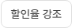 | 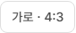 |
일치 정렬 전: 충돌 발견 |
| |||||||||||||||||||||||||||||||||||||||
| 입력 | 오류 상태 입력창 기존 [aria-invalid=true]신규 .am-ed-field .am-ed-input기존 편집기 컴포넌트에 오류 입력 규칙이 없음. 신규는 토큰 --err-line |
요소 없음·화면 밖 | 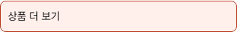 |
비교 불가 정렬 전: 비교 불가 | 잰 쪽 값: {"background-color": "rgb(255, 240, 236)", "color": "rgb(20, 20, 20)", "border-top-width": "1px", "border-top-style": "solid", "border-top-color": "rgb(181, 46, 16)", "border-top-left-radius": "8px", "height": "44px", "padding-left": "10px", "font-size": "15px", "font-weight": "400", "line-height": "24px", "font-family": "Inter, \"Pretendard Variable\", Pretendard, \"Apple SD Gothic Neo\", \"Malgun Gothic\", system-ui, sans-serif", "box-shadow": "none"} | |||||||||||||||||||||||||||||||||||||||
| 탭 | 탭(선택됨) 기존 .seg > button[aria-selected=true]신규 .ia-group-btn[aria-selected=true] |
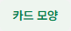 | 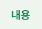 |
일치 정렬 전: 충돌 발견 |
| |||||||||||||||||||||||||||||||||||||||
| 탭 | 탭(선택 안 됨) 기존 .seg > button[aria-selected=false]신규 .ia-group-btn[aria-selected=false] |
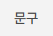 | 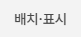 |
일치 정렬 전: 충돌 발견 |
| |||||||||||||||||||||||||||||||||||||||
| 카드 | 편집 패널 카드 기존 aside.card.panel신규 aside.inspector |
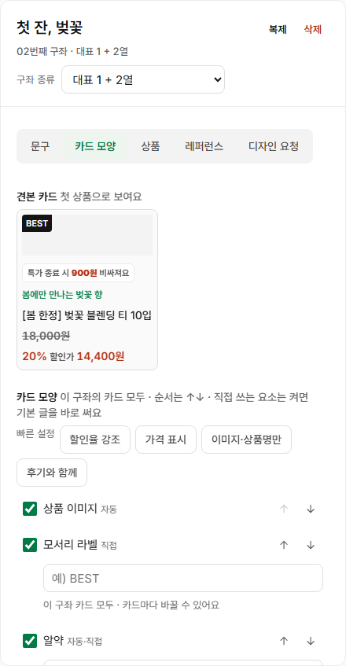 | 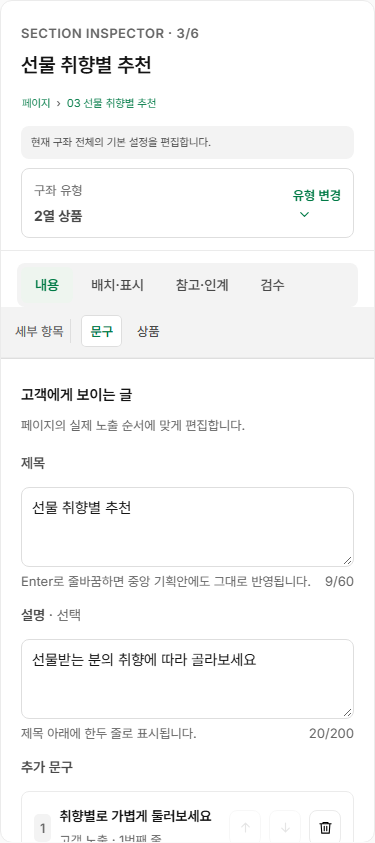 |
일치 정렬 전: 충돌 발견 |
| |||||||||||||||||||||||||||||||||||||||
| 카드 | 구좌 목록 카드 기존 nav.card.list신규 aside.outline |
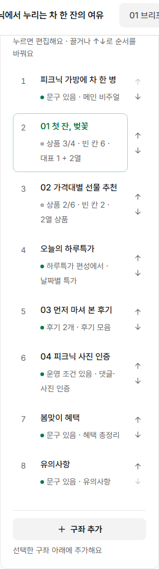 | 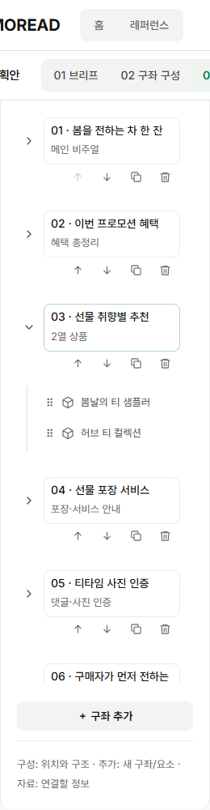 |
일치 정렬 전: 충돌 발견 |
| |||||||||||||||||||||||||||||||||||||||
| 선택 | 구좌 목록 항목(선택됨) 기존 #secList button[aria-current=true]신규 .outline-item[aria-current=true]D-054: 배경 없이 --sel-line 1px |
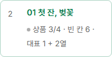 | 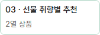 |
충돌 발견 정렬 전: 충돌 발견 |
| |||||||||||||||||||||||||||||||||||||||
| 아코디언 | 접고 펴는 묶음 기존 details신규 details기존 편집기에 아코디언 컴포넌트 없음 |
요소 없음·화면 밖 | 요소 없음·화면 밖 | 비교 불가 정렬 전: 비교 불가 | 잰 쪽 값: 양쪽 모두 없음 | |||||||||||||||||||||||||||||||||||||||
| 모달 | 대화상자 기존 #dlg신규 #typeDialog너비는 22개 유형 미리보기 때문에 신규 유지 |
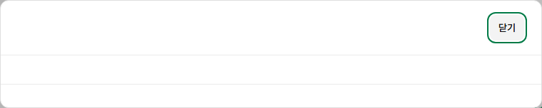 | 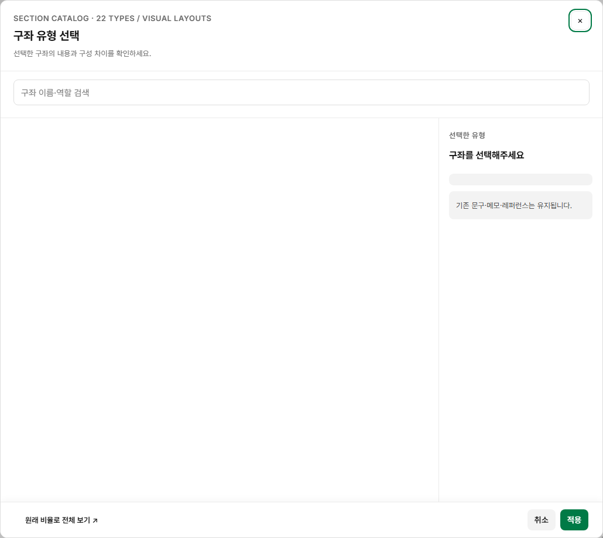 |
충돌 발견 정렬 전: 충돌 발견 |
| |||||||||||||||||||||||||||||||||||||||
| 툴바 | 도구 막대 기존 .head .acts신규 .en-tools .topstatus |
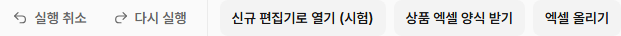 | 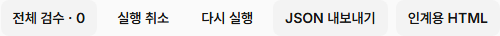 |
일치 정렬 전: 충돌 발견 |
| |||||||||||||||||||||||||||||||||||||||
| 알림 | 토스트 기존 .toast신규 #toast |
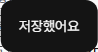 | 일치 정렬 전: 충돌 발견 |
| ||||||||||||||||||||||||||||||||||||||||
| 글자 | 화면 제목 기존 .head h1신규 .center-head h2 |
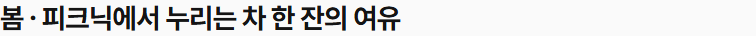 | 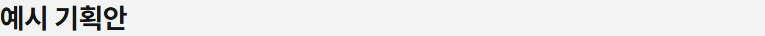 |
일치 정렬 전: 충돌 발견 |
| |||||||||||||||||||||||||||||||||||||||
| 글자 | 패널 제목 기존 #panel h2, #panel h3신규 .inspector-head h2 |
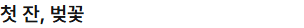 | 일치 정렬 전: 충돌 발견 |
| ||||||||||||||||||||||||||||||||||||||||
| 글자 | 본문 기존 body신규 body |
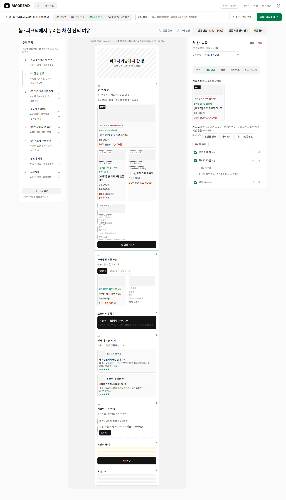 | 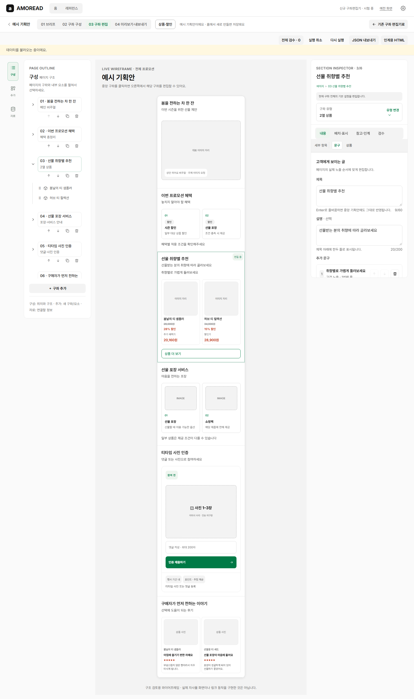 |
일치 정렬 전: 일치 | ||||||||||||||||||||||||||||||||||||||||
| 글자 | 보조 문구(캡션) 기존 .cap신규 .am-ed-group__description, .outline-desc |
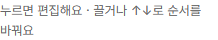 | 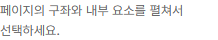 |
일치 정렬 전: 충돌 발견 |
|
일치 49 · 충돌 발견 6 · 비교 불가 0. 신규 편집기는 앱 안에서 tokens.demo.css를 읽지 않고 앱 값을 그대로 쓴다(editor-next.html). 새로 만든 토큰은 없다.
| 토큰 | v1.12 데모 값 | 앱 값(적용됨) | 판정 |
|---|---|---|---|
--font | Inter,'Pretendard Variable',Pretendard,'Apple SD Gothic Neo','Malgun Gothic',system-ui,sans-serif | 'Inter', 'Pretendard Variable', 'Pretendard', 'Apple SD Gothic Neo', 'Malgun Gothic', system-ui, sans-serif | 일치 |
--bg | #fafafa | #fafafa | 일치 |
--surface | #fff | #ffffff | 일치 |
--sunken | #f3f3f3 | #f3f3f3 | 일치 |
--hover | #f3f3f3 | #f3f3f3 | 일치 |
--ink | #141414 | #141414 | 일치 |
--ink2 | #484848 | #484848 | 일치 |
--mute | #666 | #666666 | 일치 |
--line | #dedede | #dedede | 일치 |
--line-sub | #ebebeb | #ebebeb | 일치 |
--line-strong | #adadad | #adadad | 일치 |
--accent | #007a46 | #007a46 | 일치 |
--accent-ink | #fff | #ffffff | 일치 |
--accent-soft | #eef5ef | #eef5ef | 일치 |
--sel-line | rgba(0,122,70,.32) | rgba(0, 122, 70, .32) | 일치 |
--sel-fill | transparent | transparent | 일치 |
--price | #b52e10 | #b52e10 | 일치 |
--ok | #007a46 | #007a46 | 일치 |
--ok-soft | #eef5ef | #eef5ef | 일치 |
--warn | #484848 | #484848 | 일치 |
--warn-soft | #fff8e0 | #fff8e0 | 일치 |
--err | #b52e10 | #b52e10 | 일치 |
--err-soft | #fff0ec | #fff0ec | 일치 |
--err-line | #ff5a36 | #ff5a36 | 일치 |
--shade | rgba(20,20,20,.08) | rgba(20, 20, 20, 0.08) | 일치 |
--scrim | rgba(20,20,20,.28) | rgba(20, 20, 20, 0.28) | 일치 |
--fs-cap | 12px | 13px | 충돌 발견 |
--fs-sm | 13px | 14px | 충돌 발견 |
--fs-body | 14px | 15px | 충돌 발견 |
--fs-h2 | 16px | 16px | 일치 |
--fs-h1 | 20px | 20px | 일치 |
--fs-masthead | 28px | 28px | 일치 |
--lh-cap | 18px | 20px | 충돌 발견 |
--lh-sm | 20px | 22px | 충돌 발견 |
--lh-body | 22px | 24px | 충돌 발견 |
--lh-h2 | 24px | 24px | 일치 |
--lh-h1 | 28px | 28px | 일치 |
--fw-regular | 400 | 400 | 일치 |
--fw-medium | 500 | 500 | 일치 |
--fw-strong | 600 | 600 | 일치 |
--fw-title | 700 | 700 | 일치 |
--s1 | 4px | 4px | 일치 |
--s2 | 8px | 8px | 일치 |
--s3 | 12px | 12px | 일치 |
--s4 | 16px | 16px | 일치 |
--s5 | 24px | 24px | 일치 |
--s6 | 32px | 32px | 일치 |
--s-panel | 20px | 20px | 일치 |
--s-card | 24px | 24px | 일치 |
--r | 12px | 12px | 일치 |
--r2 | 8px | 8px | 일치 |
--control-sm | 32px | 32px | 일치 |
--control-md | 36px | 36px | 일치 |
--control-lg | 44px | 44px | 일치 |
--hit | 32px | 32px | 일치 |